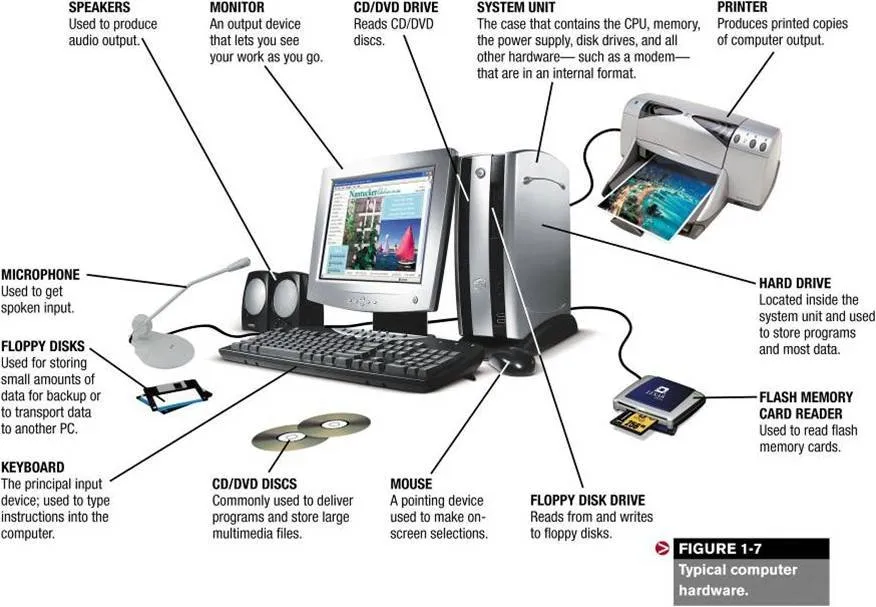

L'ordinateur, un système complexe, est constitué de plusieurs éléments interconnectés qui collaborent pour traiter les données. Sa structure générale est divisée en deux grandes parties : le matériel (hardware) et le logiciel (software). Le matériel comprend les composants physiques de l'ordinateur, tels que le processeur, la mémoire, le disque dur, le clavier, la souris, l'écran, et d'autres périphériques. Ces composants sont interconnectés par des circuits électriques et des bus de données. Le logiciel comprend les programmes et les instructions qui dirigent le matériel pour effectuer des tâches spécifiques. Il se divise en deux catégories : le système d'exploitation (OS) qui gère les ressources matérielles et fournit une interface utilisateur, et les applications qui sont des programmes spécifiques à une tâche, tels que les navigateurs web, les traitements de texte, et les jeux. L'ordinateur fonctionne en exécutant des instructions, ou des programmes, qui sont stockés dans la mémoire. Le processeur, ou le CPU, est le cerveau de l'ordinateur et exécute ces instructions pour effectuer des calculs et des opérations.

Le processeur, aussi connu sous le nom de CPU (Central Processing Unit), est l'élément central de l'ordinateur, exécutant les instructions et effectuant les calculs nécessaires au bon fonctionnement du système. La mémoire, ou RAM (Random Access Memory), est utilisée pour stocker temporairement les données et les programmes en cours d'exécution, permettant au processeur d'accéder rapidement à ces informations. Le disque dur, ou SSD (Solid State Drive), assure le stockage permanent des données et des programmes, préservant les informations même lorsque l'ordinateur est éteint. Enfin, la carte mère, le circuit imprimé principal, assure la liaison entre tous ces composants, permettant une communication efficace entre eux. Ces quatre éléments sont indispensables au fonctionnement d'un ordinateur moderne et sont étroitement interconnectés pour garantir une performance optimale du système.
Le processeur, également appelé CPU (Central Processing Unit), est le cerveau de l'ordinateur. Il fonctionne en exécutant des instructions, ou des programmes, qui sont stockés dans la mémoire. Le processeur effectue des calculs et des opérations en utilisant des données provenant de la mémoire ou des périphériques externes. Il peut également communiquer avec d'autres composants de l'ordinateur, tels que le disque dur, la carte graphique, ou les ports USB, pour accéder à des données ou envoyer des instructions. Le processeur est un élément essentiel de l'ordinateur, et sa performance détermine en grande partie la vitesse et la capacité de traitement de l'ordinateur.